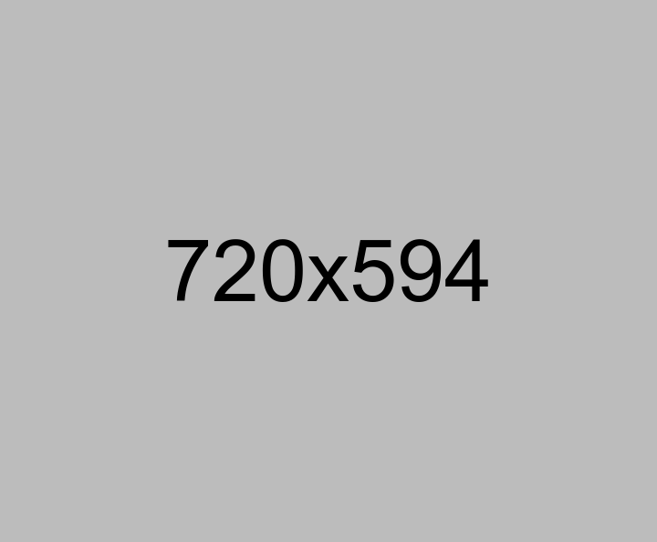
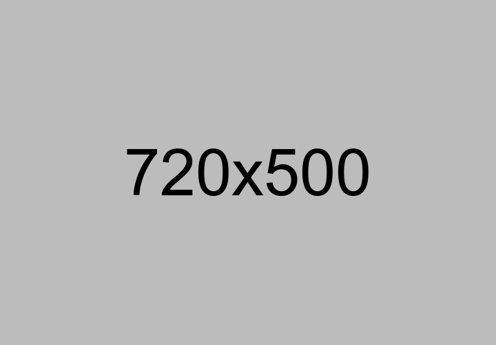
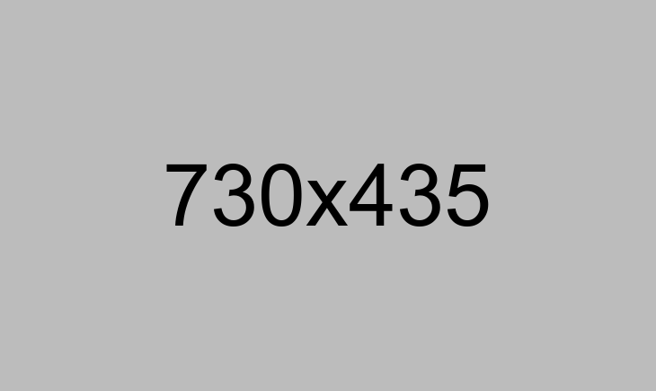

Te presentamos Orios Web
Sencilla gestión del monitoreo de condición de activos



El resultado del análisis de vibraciones se presenta de una manera sencilla.
Reportes en línea en todo momento.
Podrás estar al tanto, justo en el momento en el que se genera el reporte, de la condición de tus activos al conocer de manera específica los diagnósticos y criticidad de los posibles fallos, deterioros o necesidades específicas de mantenimiento.
Discover MoreTu mejor aliado en confiabilidad.
Orios Web te ofrece las herramientas necesarias para definir las prioridades de mantenimiento, ya sea a nivel activo o en general de varios de ellos al determinar los tipos de fallas más recurrentes.
¿Qué datos obtenemos?
- Estadísticas reales sobre el cumplimiento del programa de monitoreo de condición en tiempo real y así tener la información de la situación actual de todos sus equipos en cualquier momento.


Una herramienta única en el mercado
La información que necesitas,
disponible en todo momento.


Concentrece en la operación
Orios el mejor aliado al monitoreo de condición.


Solicita apoyo de los expertos.
Te asesoramos con la mejor de nuestras soluciones para tus necesidades,
aumentar la confiabilidad de tus activos utilizando de los servicios de MPC y la herramienta Orios Web